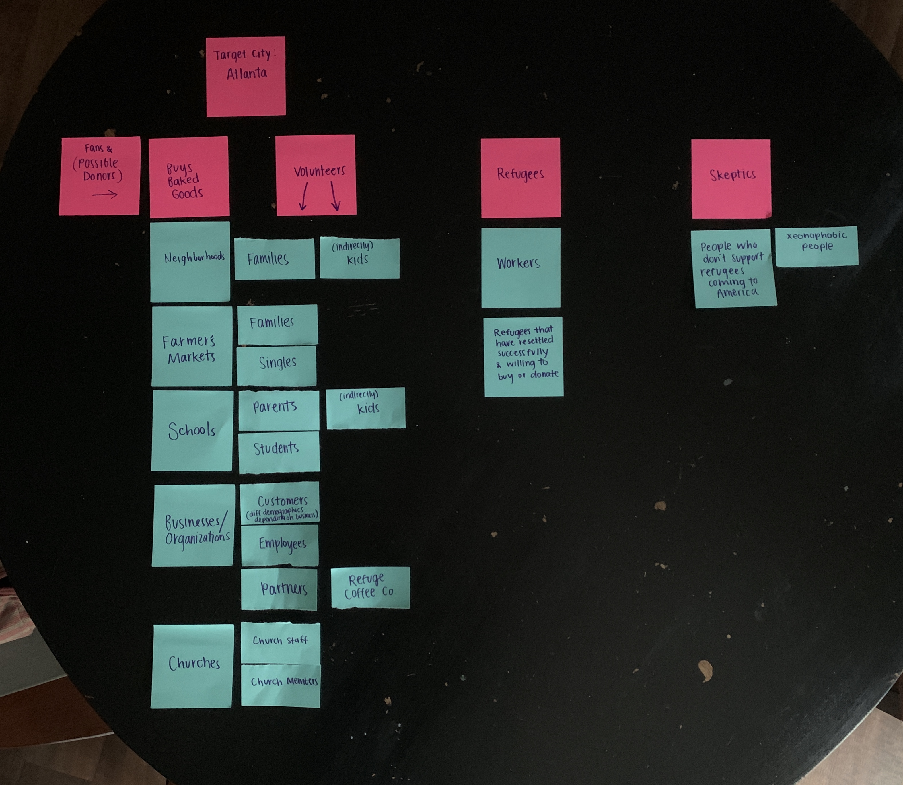
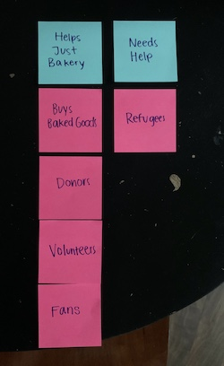

Audience and Goals
Nullam posuere erat vel placerat rutrum. Praesent ac consectetur dui, et congue quam. Donec aliquam lacinia condimentum.
Audience 
I first divided the Audience into “Buys Baked Goods” and then “Refugees”. As I did this, I brainstormed different people/groups that I thought would be involved in these two groups based off of my research. Because of this, I decided “Buys Baked Goods” can encompass donors, volunteers, and fans of the company. Then, I broke them down into even more specific audiences that I thought would buy the baked goods.

These specific audiences had to have a love for baked goods but also a love for a good cause. Based off of my primary research, I was able to discover different audiences that Just Bakery of Atlanta reaches. I then was able to even break this further down so I could understand these people/groups even better. Overall, their audience is broad because baked goods and a good cause can reach a lot of people, but families and people/groups related to organizations were prominent in the audience breakdown.
Also, after talking with Leah Lonsbury, the director of Just Bakery, I now know that the reason why the audience can be so broad is because their audience can encompass anyone who wants to support a good cause which ends up being a diverse group of people.
Site Goals
The Just Bakery of Atlanta website exists to share their purpose mainly. In order for the website to be impactful, the redesigned site needs to make their mission clear, their events easier to find, consistent branding, and overall make it easier to navigate. Users tend to be on the website when they have a desire to help the refugee crisis in Atlanta, to support a good cause in general, or to buy baked goods. They could do this in their home on their computer or when they are out and about and are at an event.
Client
- Share purpose and mission
- Raise awareness about the refugee crisis in Atlanta
- Show products sold
- Share events
- Connect users to Instagram and Facebook
- Receive donations
Audience
- Learn more about mission
- Know menu of products
- Learn about events
- Learn more about refugee crisis
- Learn about opportunities to volunteer
- Connect to social media
- Donate
Website
- Spread mission and purpose
- Show products
- Share events
- Easy to navigate and pleasing to look at
- Inform users about refugee crisis in Atlanta
- Easy process to donate and to volunteer
Specific Goals
| Users | Goals | Content |
|---|---|---|
| Families |
|
|
| Young Singles |
|
|
| Customers from a Just Bakery Church/Business Event |
|
|
| Staff of Church/Business |
|
|
| Students |
|
|